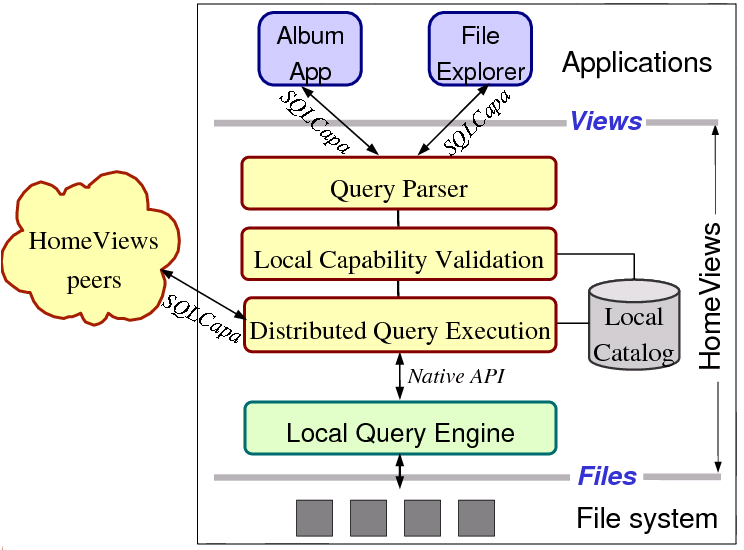

Today's users acquire and produce large volumes of digital data: digital pictures, music files, home videos, documents. Users need tools to help them organize and manage this information. In this project, we are exploring techniques to help users organize their data in flexible ways, protect their data, but also selectively share their data with other users on the Internet. In particular, we are building a prototype system called HomeViews that allows users to:
HomeViews enables all the above features without requiring any account management nor user authentication thus minimizing the administrative burden on the users.
HomeViews' protection mechanism is based on capabilities. Originally developed in the context of object-based operating systems, a capability bundles together a view name with access rights. Users give each other access to their data simply by exchanging capabilities to their views, much like users enable each other to view their private Web pages by exchanging URLs.
The figure below shows the high-level architecture of HomeViews.

At the lowest level, all files are stored in the file system as usual. They can also be edited directly by accessing the file system. HomeViews is a middleware that sits between applications and a desktop search engine such as Beagle or Mac OS Spotlight. Users interact with applications built on top of HomeViews. Applications translate user actions into requests to our engine. Users can create views, modify views, create capabilities for views, share these capabilities, compose views, and execute queries over both local and remote views. HomeViews keeps track of all locally-created views and capabilities in its internal catalog. It also manages the potentially distributed query execution resulting from evaluating queries over views.